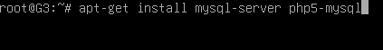
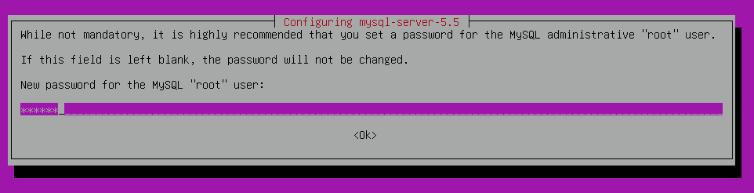
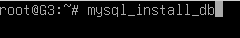
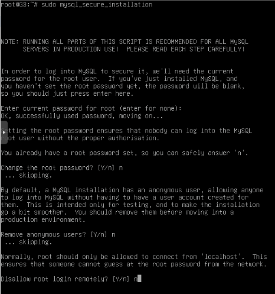
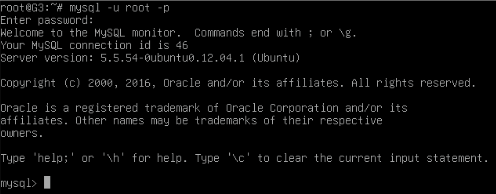
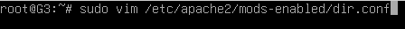
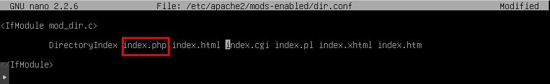
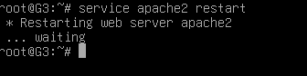
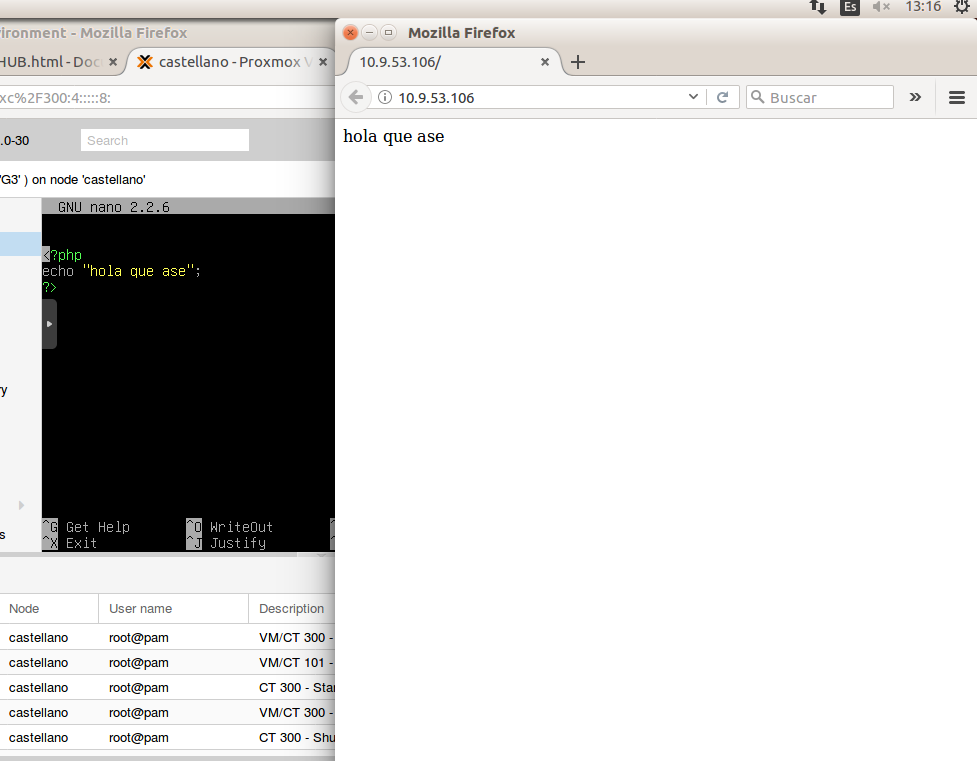

PHP-MySQL
-
Instalación mysql-server
Instalaremos “mysql-server” para poder tener un sistema de base de datos y poder almacenar los datos de las páginas y “php5-mysql” que dará soporte de PHP a la base de datos.
apt-get install mysql-server php5-mysqlAl haber instalado “MySQL” nos pedirá crear una contraseña para el usuario root.
 -
Ejecución mysql_install_db
Ejecutaremos “mysql_install_db” para indicarle a la base de datos que cree la estructura de directorios donde se almacenará la información.
mysql_install_db -
Ejecución mysql_secure_installation
Ejecutaremos “mysql_secure_installation” para limitar el acceso a la base de datos y así hacerla más segura.
mysql_secure_installation -
Conexión MySQL
Nos conectaremos a mysql para comprobar que todo funciona correctamente.
mysql -u root -p -
Instalación PHP5
Instalaremos “php5” para poder mostrar los archivos de ese tipo, “libapache2-mod-php5” que proveerá el soporte de php para Apache y “php5-mcrypt” que ofrece las librerías de diversos sistemas de encriptación para php.
apt-get install php5 libapache2-mod-php5 php5-mcrypt -
Edición archivo dir.conf
Editaremos el archivo “/etc/apache2/mods-enabled/dir.conf” para que Apache busque primero por “index.php” para que lea nuestros ficheros “.php” en vez de empezar por “index.html”.
nano /etc/apache2/mods-enabled/dir.conf Por último reiniciamos el servicio de apache2 para que se guarden los cambios realizados.
service apache2 restart -
Comprobación
Comprobaremos que han funcionado los cambios y los ficheros “.php” se leen correctamente.
 -
Vídeo